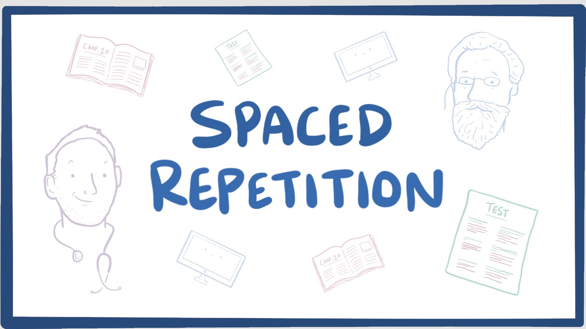
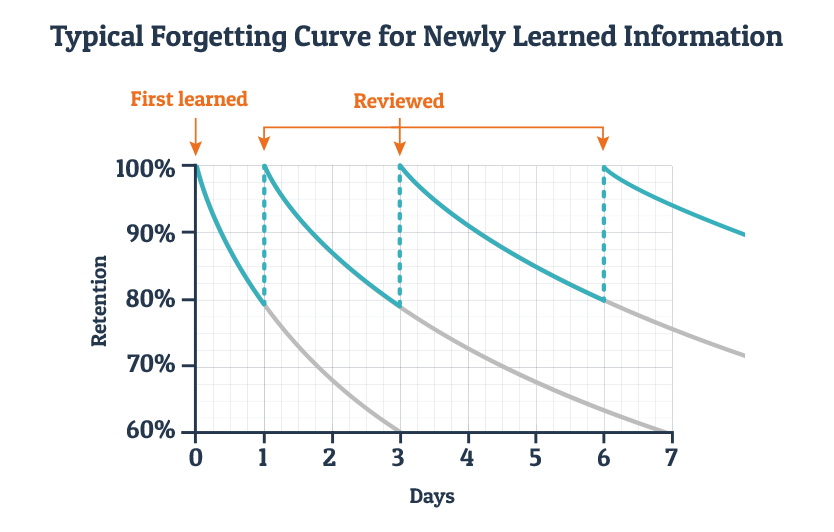

(Open Repetition Learning Platform) is a high-performance platform based on a spaced repetition learning
technique
Spaced repetition is a learning technique that incorporates increasing intervals of time
between subsequent review of previously learned material in order to exploit the psychological spacing
effect


The more often you have encountered a piece of information the less often you need to refresh
it to keep it in your memory. However, even the most familiar information will be forgotten if it is not
encountered or refreshed for a very long time. In spaced repetition information is reviewed at gradually
increasing intervals which decreases the rate at which information is forgotten
On this Platform all learning material is divided into specific topics, such as
programming languages, and are called categories. Each category contains courses which contain decks that are
subject of repetition learning and should be completed over and over to consolidate material. Each deck contains a
set of cards if the card is answered correctly then it will be marked to appear less frequently in the future,
whereas if you get the answer wrong, the card will be set to appear more frequently.